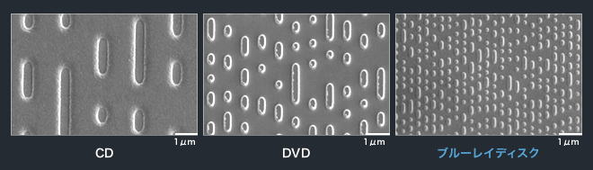

| TOP | weblog | TIPS | Works | リンク |
| DVD複製(リッピング＆ライティング） (1)初めに (2)市販DVDの構造 (3)DVD-Rはなぜ複製できるの？ (4)市販（レンタル）DVDは暗号化されているので複製できないはずなのですが.... (5)リッピングと言う用語 (6)DVDの中に入っているフォルダとファイル (7)市販DVDをDVD-Rに複製する手順 (8)DVDShrinkの操作説明（リッピング） (9)DAEMON TOOLS Lite（仮想DVDドライブ装置）の解説と操作 (10)DVD-Rへの書き込み（バーニング） (1) 市販品やレンタルDVDを借りてきて同じ映像をDVDプレイヤーやパソコンで繰り返し見たい。 そのためには、あったりまえですが「複製」をしなければなりません。 昔、太陽誘電と言う日本の会社がCD（コンパクトディスク）を複製するための技術を開発しました。 これが「CD-R」です。 CD-Rの技術は瞬く間に浸透し、DVD-R、BD-R（ブルーレイ）へと進化しています。 ここでは映像コンテンツで一番沢山流通しているDVDの「複製」について解説します。 CDもBDの複製も使うソフトウェアやメディアが異なるだけで基本的な考え方は一緒です。 -戻る- (2) DVDーRも仕組み。 ヤマダ電機やツタヤでDVD-Rが販売されていますが、なぜそれに複製ができるか簡単に解説します。 難しいことは管理人もわからないのです。 まず、市販のDVDの顕微鏡写真をご覧ください。  ボコボコとしているのは「ピット(穴)」と呼ばれるもので、DVDドライブは回転しているDVDにレーザー光線をチョー正確に照射しごくわずかな明暗をデジタルデータとして読み取るのです。 (私はこれがなぜ音楽や映像になるのかは理解しようとしません。） -戻る- (3) 複製をするわけですから上の顕微鏡写真と同じようにデコボコを同じにしなければなりません。 売っているDVD-Rには「有機色素」つーのが塗られていて、強いレーザー光線を当てると同じようにデコボコ「ピット」を形成できるようになっているのです。 市販のCDやDVDは「プレス加工」で製造するので綺麗な楕円形をしてますけど、複製し終わったDVD-Rはいびつな形になります。（むかしは顕微鏡写真があったんですけど、今は見つかりませんでした、残念） 余談ですが昔はDVD-Rの品質が悪くDVDドライブ装置の製造技術も未熟だったので、ピットの形がいびつ（汚い形）だったり、コピー元とは違うデータとして読み取られるような事が多々あって、再生すると途中で映像が止まったり、ノイズが入ったり、映像が飛んだりしました、最近は技術革新のおかげでそういったエラーは相当少なくなりました。 パソコンのファイルをDVD-Rにレーザー光線照射をコントロールするソフトを「ライティングソフト」と言います。 (まあ、実際のところレーザー光線の制御はDVDドライブ装置がやってるんですけどね、ライティングソフトはその仲介役みたいなソフトです) -戻る- (４) 市販の映像DVD（DVD-Video）には「CSS」と言う複製防止用の暗号化が施されています。 単純な４０ビットの暗号キーによる暗号化なんですけどアホな会社があって、暗号キーをそのまま隠さずDVD再生ソフトに組み込んじゃいました。 1999年、当時16歳だったノルウェーの少年ヨン・レック・ヨハンセン君がそれを解読してDVDの暗号化を解除する技術を公開しちゃったのです。 そこから派生していろいろなDVDコピーソフトが主にフリーソフトとして流通するようになったと言う訳です。 ここではとりわけ使い勝手が良い「DVDShrink（ディーブイディーシュリンク）」を使ったコピー方法を紹介します。 -戻る- (5) 「リッピング」とは、DVDや音楽CDなどに記録されているデジタルデータを、そっくりそのままの形またはイメージファイルでパソコンに取り込むか、パソコンで扱いやすいデータの形に変換して、ファイルにすることです。 -戻る- (6) DVD-Videoの中身の説明です。 市販DVDはどのメーカーのプレイヤーでも再生できるようディレクトリ構造、ファイル名、ファイルの構造は規格にのっとって作られています、当たり前。 異なるのは連番のついたファイルの数とファイルのサイズ。 長編の映画もあれば短編の映画もあるし吹き替え音祭が入っていたり、いなかったり。 DVDーVideoは必ず「VIDEO＿TS」と言うフォルダがトップディレクトリにあって、その中にはBUP、IFO、VOBの３種類の複数ファイルで構成されています。 (拡張子とはファイル名のピリオドを含む３文字（4文字もたまにある「.html」の事です、チョー重要用語） DVDのファイル形式は「DVD VideoのFile構成について」が詳しいです、僕も初めて見ました。 DVDの中身を拝見したビデオです、沢山のファイルが入っているよ、それだけのビデオです。 -戻る- (7) DVDの複製手順です。
(8) リッピング。 市販のDVDから暗号を解除してパソコンのハードディスクの中にイメージファイルを作成する作業です。 「DVDShrink」を起動します。 管理人のOSはWindows8なのでほかのバージョンのWindows（XPとか７とか）では少し違いますがスタートボタンから「DVDShrink」を起動します。 ディスクトップにアイコンが張り付けてればダブルクリックで起動しても構いません。 DVDShrinkの簡単な操作説明ガイドです。 とりあえずフルサイズで見て下さい。そのあと詳細説明します（の、予定） -戻る- (9) DVDShrinkで市販DVDの内容すべてが「暗号が解除されて」ISOイメージファイルになりました。 次はこの「暗号が解除されて複製可能な」ISOイメージファイルを仮想のDVDに見立てるための手順を解説します。 といってもとっても簡単です。 -戻る- (10) DVD-RやCD-Rに映像や音楽を書き込むことを「バーニング」とか言ったりします。 レーザー光線でジリジリと雪色素を焦がして削るからそう言う言い方をするんでしょう、きっと。 でも書き込むソフトは「バーニングソフト」とは言わない。 他にも読み込んだりする機能もあるからでしょう、でも、「ライティングソフト」と言ったりもする。 この辺が初心者を混乱させる要素の一つ。 あまりなじみのない「Roxio Creater」、富士通のノートPCにプリインストールされているソフト。 静止画から無理矢理動画っぽいマニュアルを作ってみました。 この操作マニュアルだけでは不十分なのは分かっています。 解説していない用語もあるし、説明もだいぶ端折っていますからね。 でも、「自分でもできるかもしれない。」って、少しでも思ってくれたり、なんかパソコンに興味を持って燃えあえたりすると嬉しい。 作ったかいがあるというものです。 |